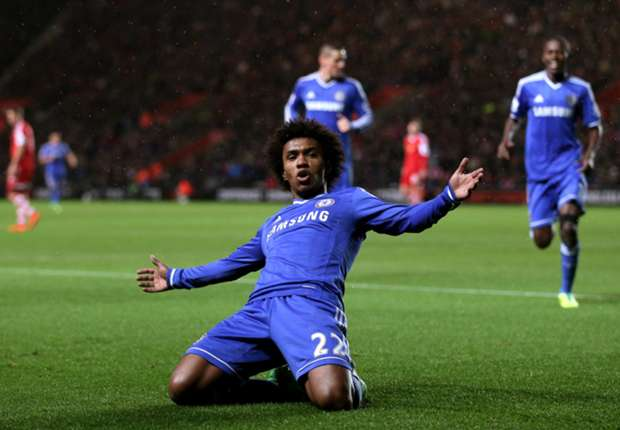

Welcome to Fubtol.com your source to everything Futbol, whether you are looking for a score of a match, transfer news, lineup changes and injuries and Odds of games. You have come to the right place
England - Chelsea thump Fulham 8-2 during behind doors friendly
Italy - Juventus agree to sell worlds beset defender to rival A.C Milan for only 30 million euros
Cristiano Ronal Expecting another baby after welcoming twins?!?!?
Chelsea
Premier League Champions Chelsea Football Club defeated Fulham by the score of 8-2 behind closed doors at Cobham Chelsea's practice facility.
Chelsea took a commanding lead early on, by the time the first half rolled by, they were up comfortably 5-1, thanks to a first half hattrick by their brazilian star Wilian, with mitch "batman" scoring two goals to round up the first half
Liverpool have announced they agreed on a fee for Roma Player Mohamed Salah for a reported fee of 40 million dollars pending a medical. The English Giants have courted the Egyptian Players plenty of times, with Liverpool Coach Jurgen Klopp a big fan of his abitily to create chances for himself, aswell as others. Mo Salah scored 11 goals and assisted another 14 goals.